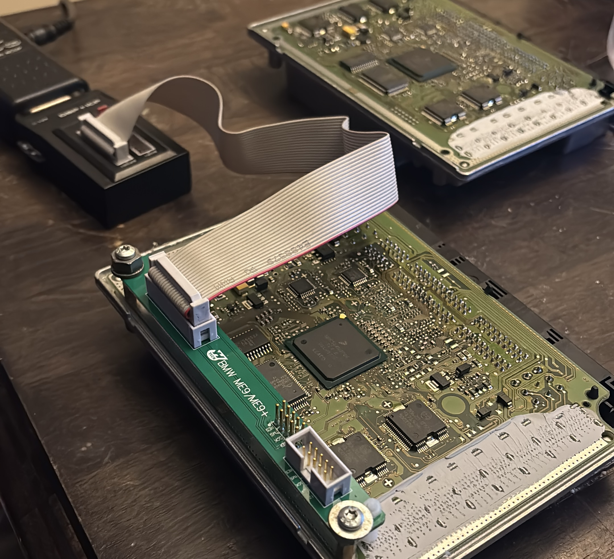

Our Recent Work



Why Choose Our Mobile Service?
Get professional-grade BMW maintenance without the dealership hassle. We come to your home or office in Western Washington.
- BMW Specialist - S85 V10 & N-Series Expertise
- Battery Registration & CBS Resets
- CAS/DME Sync & Module Programming
- Fully Mobile – We come to you!